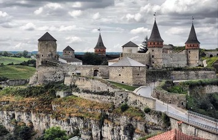

Кам’янець-Подільський, Хмельницьк
Ключова фігура, яка приваблює масу туристів до міста, — це, звичайно, середньовічна фортеця, що існує ще з часів Київської Русі. На її території проводились зйомки багатьох фільмів. Прогулянка фортецею приносить величезне задоволення: 11 веж.